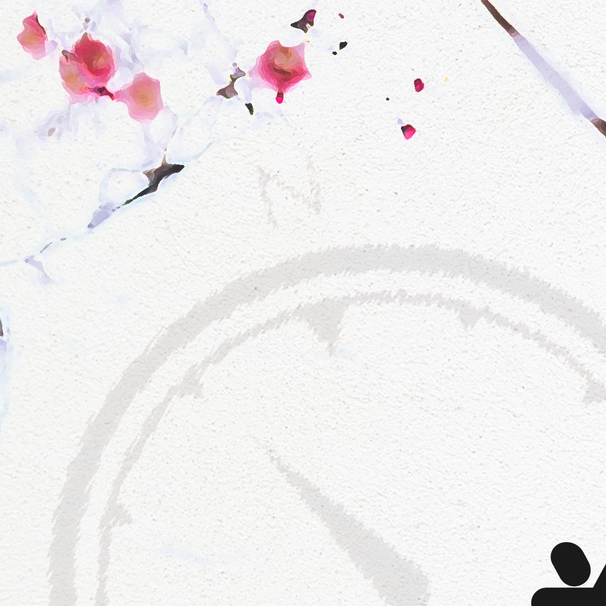
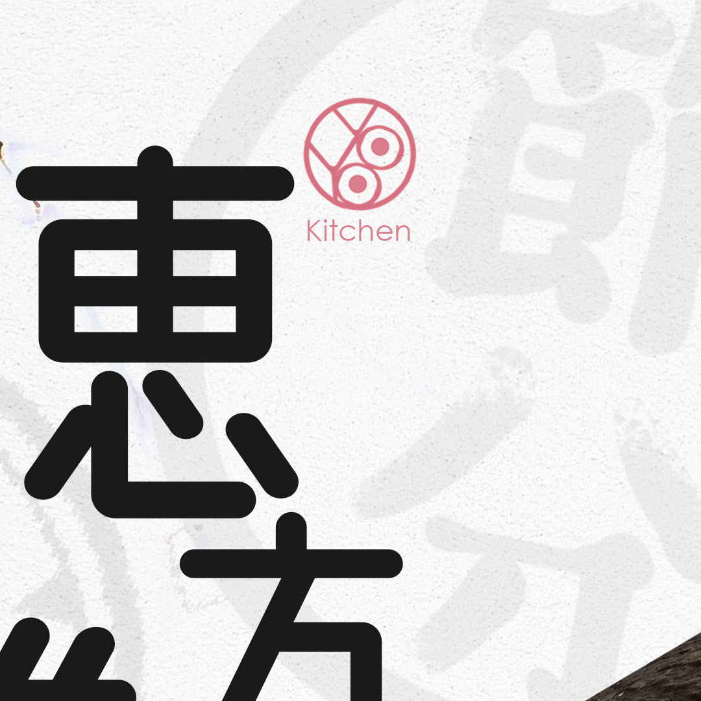
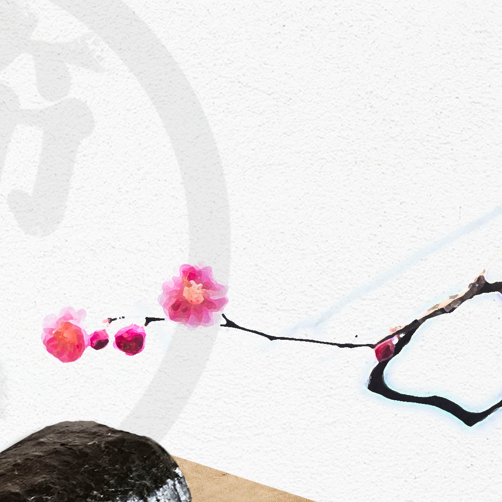
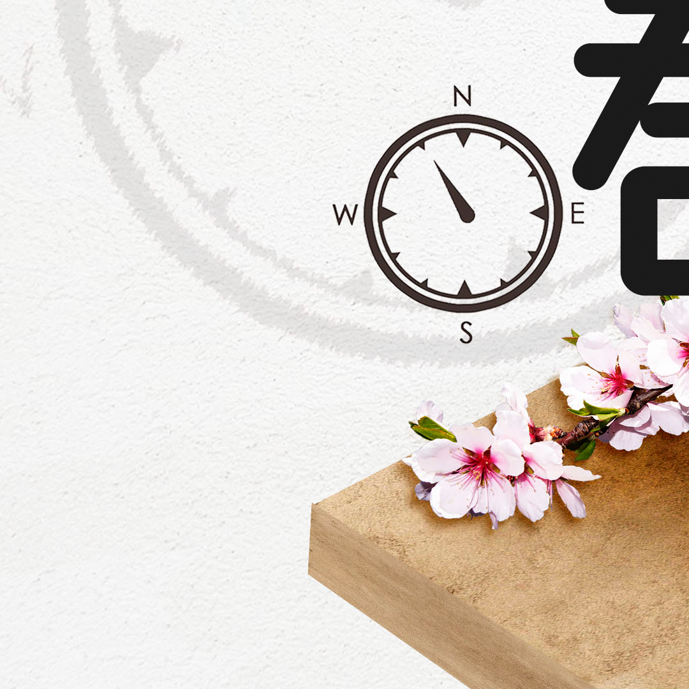
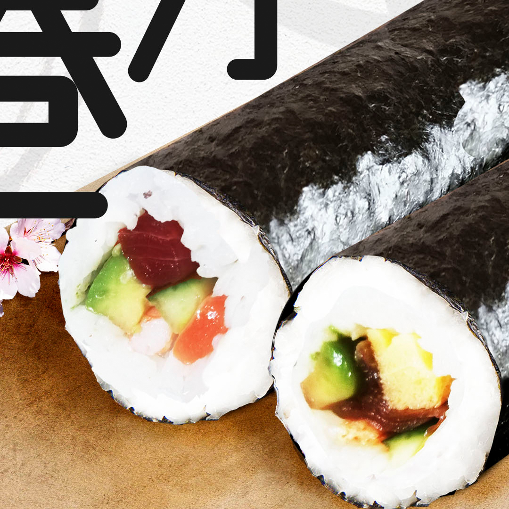
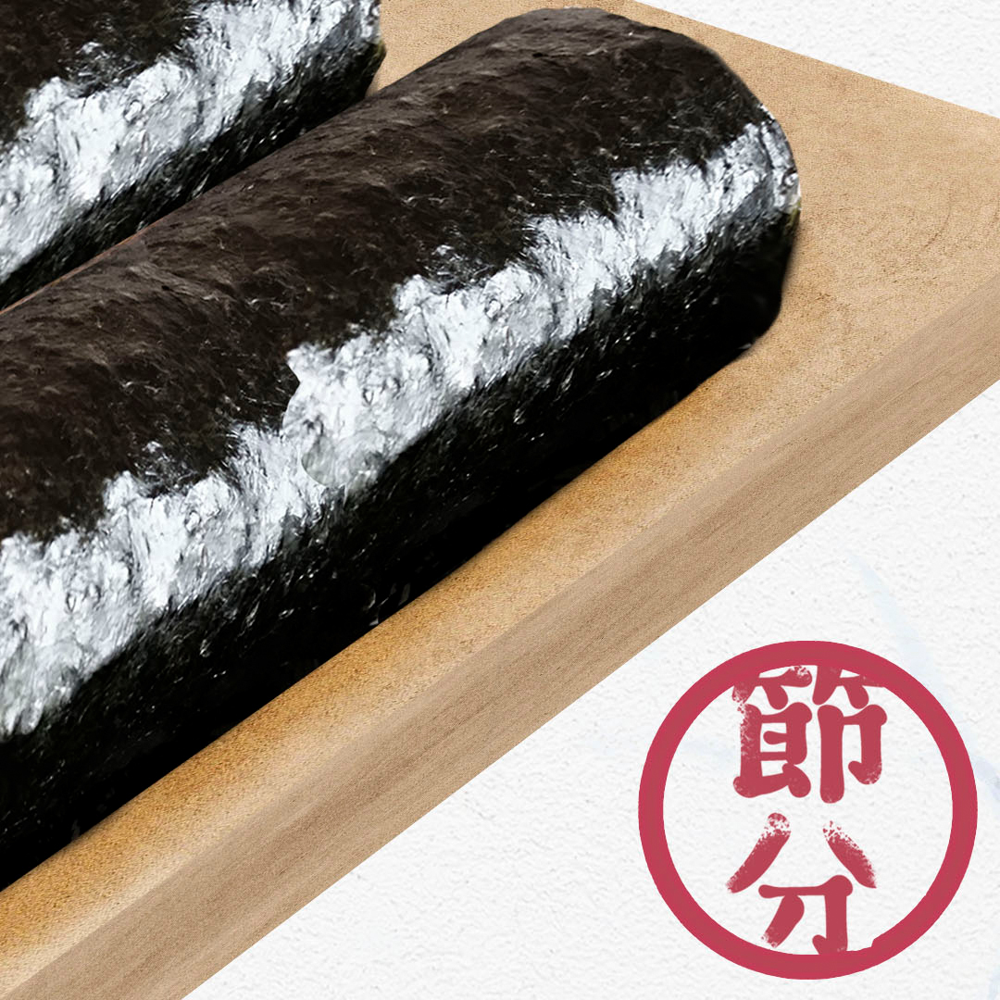

Setsubun Ehomaki Promotion 2022
Setsubun is usually held on the 3rd of February, and it marks the beginning of spring and the new year. It's customary to eat an Ehomaki on this day - a special, uncut sushi roll made from seven ingredients. An Ehomaki should be consumed without cutting (so the good fortune is not cut off) in silence, while facing that year's lucky direction.


Promotional posters
A set of promotional posters in A2 size, in two languages, for print.
- 
- 
- 
- 
- 
- 
Instagram post
An image in 3240x2160, cut into six parts to match the mosaic layout on the company's instagram home page.

Product packaging
A paper belt for the physical product featuring the main points of the design, contanining all allergen information, expiry date and storage instructions.